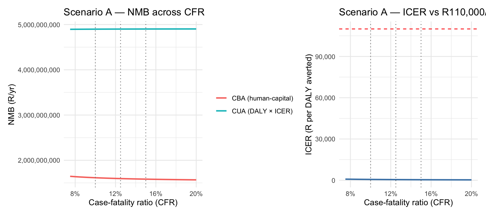
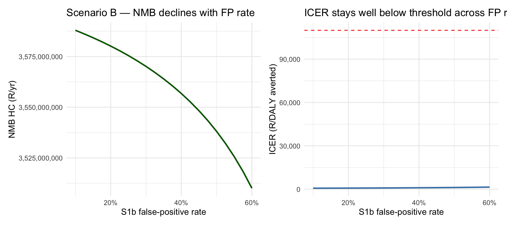
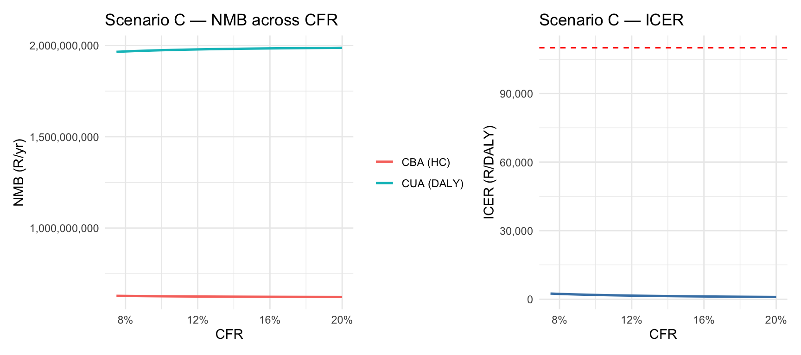
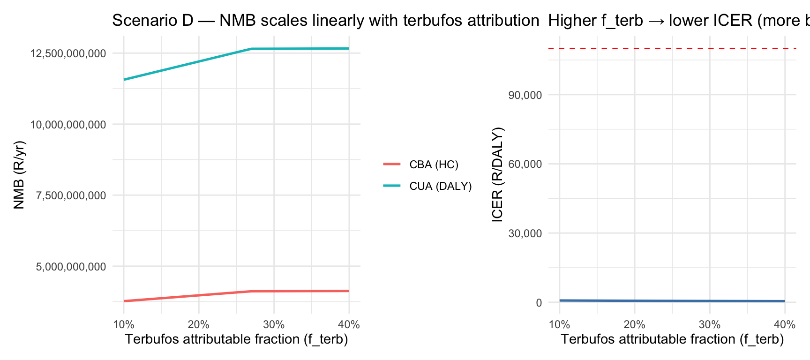
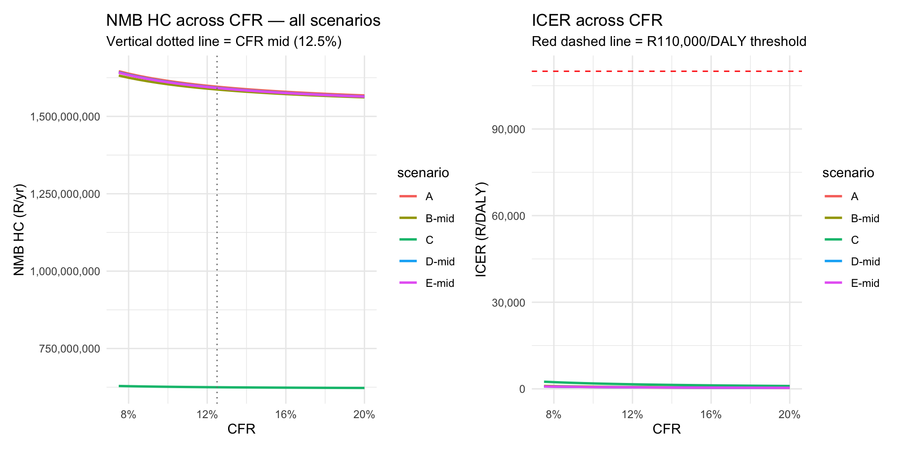
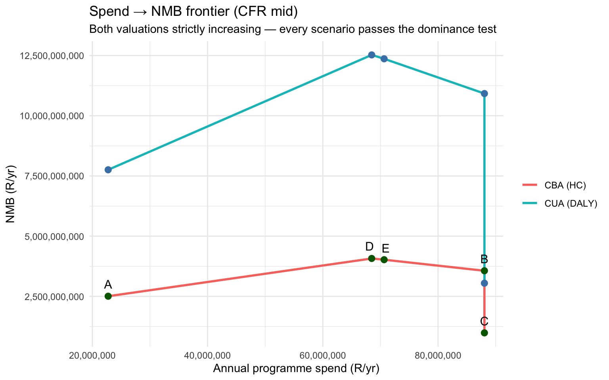

flowchart LR
HARM[Pesticide-poisoning<br/>harm in SA<br/>~2,620 deaths/yr<br/>~R2.34B/yr burden]:::harm
%% ===== Four root-cause domains =====
HARM --> SURV[Surveillance gaps]:::dom
HARM --> COORD[Coordination &<br/>response gaps]:::dom
HARM --> BAN[Regulatory /<br/>banning gaps]:::dom
HARM --> CTX[Contextual<br/>upstream drivers]:::dom
%% ===== Surveillance drivers =====
SURV --> SV1[No integrated 3-stream<br/>system NMC + NHLS + PIH]
SURV --> SV2[No live-patient<br/>chemical toxicology]
SURV --> SV3[Hospital-only<br/>surveillance reach]
SURV --> SV4[Limited EBS / community<br/>signal capture]
SURV --> SV5[Poor data standardisation<br/>NMC does not follow<br/>AfriTox agent naming]
SURV --> SV6[Forensic chemistry<br/>fully de-identified —<br/>no demographics]:::oos
SURV --> SV7[MLDI system limited<br/>for surveillance utility]:::oos
SURV --> SV8[CRVS / StatsSA MACOD<br/>3–4 year publication lag]:::oos
SURV --> SV9[CRVS does not capture<br/>manner of death]:::oos
SV1 --> OS_MVP[Surveillance MVP<br/>S1 + S2]:::opt
SV2 --> OS3[Surveillance S3<br/>sentinel toxicology]:::opt
SV3 --> OS1b[Surveillance S1b<br/>community / EBS layer<br/><i>Phase 2, conditional</i>]:::opt
SV4 --> OS1b
SV5 --> OS1[Surveillance S1<br/>AfriTox harmonisation<br/>+ NMC agent drop-down]:::opt
%% ===== Coordination drivers =====
COORD --> CO1[EHP investigation<br/>outcome not recorded<br/>back on NMC]
COORD --> CO2[EHP → DALRRD referral<br/>has no SOP, no audit trail]
COORD --> CO3[Clinicians get no<br/>case-status feedback]
COORD --> CO4[No M&E of investigation,<br/>source removal, or<br/>regulatory action]
COORD --> CO5[Unknown chemical agent<br/>registries — storage / use<br/>locations not shared<br/>with health sector]:::oos
CO1 --> OC1[Coordination C1<br/>NMC closure-of-loop<br/>EHP field]:::opt
CO2 --> OC2[Coordination C2<br/>structured EHP → DALRRD<br/>referral form]:::opt
CO3 --> OC4[Coordination C4<br/>notifier auto-feedback]:::opt
CO4 --> OC5[Coordination C5<br/>joint KPI dashboard]:::opt
CO4 --> OC3[Coordination C3<br/>NICD → DALRRD<br/>intelligence feed]:::opt
%% ===== Banning / regulatory drivers =====
BAN --> BN1[Most toxic agent in recent<br/>mass-poisonings still legally<br/>registered Terbufos<br/>contrary to international std]
BAN --> BN2[Informally traded<br/>street-pesticide market]
BAN --> BN3[Repackaged into<br/>unlabelled containers]
BN1 --> OT2[Terbufos T2<br/>cancel registration<br/>12–24 mo phase-out]:::opt
BN2 --> OT2
BN3 --> OT2
%% ===== Contextual / upstream drivers — explicitly out of scope =====
CTX --> CX1[HHPs used as<br/>vermin control<br/>in informal settlements]:::oos
CTX --> CX2[Industry / trade pushback<br/>to protect crop yield<br/>despite safer substitutes]:::oos
CTX --> CX3[Mental health burden<br/>and suicide pathway]:::oos
CTX --> CX4[Low public awareness<br/>of informal-pesticide toxicity]:::oos
CTX --> CX5[Low / unknown occupational<br/>health & safety on farms]:::oos
%% ===== Styling =====
classDef harm fill:#f99,stroke:#900,stroke-width:2px,color:#000
classDef dom fill:#fde,stroke:#333,stroke-width:1.5px,color:#000
classDef opt fill:#cfc,stroke:#060,stroke-width:1.5px,color:#000
classDef oos fill:#eee,stroke:#999,stroke-dasharray: 5 5,color:#555
Overall Policy Model v3
Decision-maker cost evaluation: five layered scenarios with full CBA and CUA accounting, transparent CFR sensitivity
policy
integrated-model
decision-makers
CBA
CUA
auditable
0.1 Purpose
This v3 model is built for policy makers who need to evaluate the cost of various surveillance, coordination, and chemical-ban scenarios in a way that is transparent and defensible.
0.1.1 4b. System-wide root cause analysis — what is in scope, and what is not
The fishbone above is deliberately narrow to surveillance under-detection. The figure below widens the lens to the full set of root causes of pesticide-poisoning harm in South Africa — surveillance, coordination, regulatory, and contextual — and maps each to a policy option in the D2P portfolio (this brief, the Coordination brief, and the Terbufos brief). Drivers that are not connected to a policy option are explicitly out of scope for the current D2P workstream: they are real problems, but addressing them sits outside this project’s mandate, funding window, or institutional authority.
This chunk is intentionally self-contained (Mermaid only, no R dependencies) so it can be copied verbatim into the coordination or terbufos briefs, the analysis report, or a standalone slide deck.
How to read. Each domain (surveillance / coordination / banning / contextual) lists every root cause raised in the D2P scoping work. Green nodes flow to a concrete policy option in this portfolio. Grey-dashed nodes are explicitly not addressed: forensic-chemistry de-identification and MLDI redesign are separate NHLS / NICD workstreams; CRVS lag and manner-of-death capture sit with StatsSA and Home Affairs; the chemical-agent storage registry sits with DALRRD and DTIC; and the contextual drivers (HHPs-as-rodenticide, industry pushback, mental health, public awareness, farm OHS) are real upstream determinants but are owned by departments and disciplines outside the D2P remit. Calling them out as out-of-scope here is the honest alternative to either pretending the portfolio addresses them or pretending they do not matter.
1 Golden Thread
The golden thread is preserved end-to-end for every scenario:
deaths averted → health (morbidity) costs averted → YLL costs averted → full CBA and CUA
CBA uses the human-capital valuation (R1.5M per averted death; R12k per averted morbidity case). CUA uses GBD 2019 disability weights valued at the SA ICER threshold of R110,000 per DALY (1× GDP per capita 2025). Both run on the same underlying epi quantities so the only difference between CBA and CUA outputs is how a life-year is monetised — making the policy-relevance of each valuation framework directly comparable.
CFR is the largest single source of denominator uncertainty in the SA pesticide burden estimate (StatsSA MACOD records deaths; the true non-fatal case count depends on the assumed CFR). v3 propagates this uncertainty continuously across all scenarios and presents the result as line graphs rather than tables of point estimates.
1.0.1 Five scenarios
| # | Label | Detection | Coordination | Ban |
|---|---|---|---|---|
| A | Ceiling administrative surveillance, perfect coordination | MVP only (19%) | Perfect | None |
| B | + Community surveillance, perfect coordination (FP sweep) | MVP + S1b lo→hi | Perfect | None |
| C | Community surveillance + imperfect coordination | MVP + S1b mid | Imperfect | None |
| D | All layers + perfect ban (terb attributable sweep) | MVP + S1b mid | Perfect | \(\phi_{terb}=1.0\), \(f_{terb}\) lo→hi |
| E | All layers + imperfect ban (90% drop) | MVP + S1b mid | Perfect | \(\phi_{terb}=0.90\) |
Working definitions (user-confirmed):
- Perfect coordination: \(\eta = 0.50\) (response efficacy upper), \(k_{cluster} = 3.5\) (high), full deaths-averted from coordination decision-tree (n = 957/yr).
- Imperfect coordination: \(\eta = 0.15\), \(k_{cluster} = 1.2\), 50% of coordination deaths-averted (n ≈ 479/yr).
- Imperfect ban: \(\phi_{terb} = 0.90\) (90% of terbufos-attributable burden retired; 10% residual from informal stockpile / cross-border leakage).
1.1 Setup
Code
library(tidyverse)
library(gt)
library(scales)
library(patchwork)
raw <- readr::read_csv("../amua_import_parameters_v4.csv", show_col_types = FALSE)
pick <- function(name) {
v <- raw |> filter(Name == name) |> pull(Expression)
if (length(v) == 0) NA_real_ else suppressWarnings(as.numeric(v[1]))
}
# ── Burden anchors ────────────────────────────────────────────────────────────
N_deaths <- pick("n_deaths_headline") # 2,620 deaths/yr (StatsSA MACOD)
c_morb <- pick("c_morbidity_headline") # R12,000 per morbidity case (HC)
c_mort_HC <- pick("c_mortality_human_capital") # R1,500,000 per death (human-capital)
# ── CFR sensitivity range (continuous) ────────────────────────────────────────
cfr_lo <- pick("cfr_headline_lo") # 0.10
cfr_mid <- pick("cfr_headline_mid") # 0.125
cfr_hi <- pick("cfr_headline_hi") # 0.15
cfr_grid <- seq(0.075, 0.20, by = 0.005) # continuous grid for line plots
# true cases helper — single source of truth for the denominator
N_true_of <- function(cfr) N_deaths / cfr
N_true_mid <- N_true_of(cfr_mid) # 20,960 cases/yr at mid CFR
# ── Detection probabilities ───────────────────────────────────────────────────
d_SQ <- pick("d_status_quo") # 0.048 (NMC-only baseline)
d_MVP <- pick("d_surveillance_mvp") # 0.189 (admin ceiling = S1 + S2)
d_S1b_lo <- pick("d_S1b_event_community_lo") # 0.25
d_S1b_mid <- pick("d_S1b_event_community_mid") # 0.40
d_S1b_hi <- pick("d_S1b_event_community_hi") # 0.55
# ── Costs: surveillance ──────────────────────────────────────────────────────
c_MVP_op <- pick("c_surv_MVP_op") # R137k = S1 + S2
c_S1b_lo <- pick("c_S1b_op_lo") # R800k
c_S1b_mid <- pick("c_S1b_op_mid") # R1.5M
c_S1b_hi <- pick("c_S1b_op_hi") # R2.5M
# ── Costs: coordination ──────────────────────────────────────────────────────
c_coord_FP <- pick("c_coord_FP_op") # R145k C1+...+C5
n_av_coord_FP <- pick("n_deaths_averted_coord_FP") # 957 deaths/yr full package
# Coordination "quality" presets
coord_presets <- list(
perfect = list(eta = pick("eta_response_hi"), k_cluster = 3.5, n_av_coord = n_av_coord_FP),
imperfect = list(eta = pick("eta_response_lo"), k_cluster = 1.2, n_av_coord = 0.50 * n_av_coord_FP)
)
# ── False-positive rates (community S1b only) ────────────────────────────────
p_fp_S1b_lo <- pick("p_fp_S1b_lo") # 0.20
p_fp_S1b_mid <- pick("p_fp_S1b_mid") # 0.35
p_fp_S1b_hi <- pick("p_fp_S1b_hi") # 0.50
# ── Chemical-agent params ────────────────────────────────────────────────────
f_terb_lo <- pick("frac_terbufos_attributable_lo") # 0.20
f_terb_mid <- pick("frac_terbufos_attributable_mid") # 0.25
f_terb_hi <- pick("frac_terbufos_attributable_hi") # 0.35
phi_terb_perfect <- 1.00 # perfect ban: 100% retired
phi_terb_imperfect <- 0.90 # imperfect ban: 90% retired (10% residual)
c_T2_enf <- pick("c_T2_RUP_enforcement_mid") # R2M DALRRD enforcement
# ── DALY / CUA (GBD 2019) ────────────────────────────────────────────────────
yll_per_death <- pick("yll_per_death_gbd") # 44 YLL
yld_per_case_severe <- pick("yld_per_case_severe") # 0.033
yld_per_case_mild <- pick("yld_per_case_mild") # 0.003
p_severe <- pick("p_severe_among_detected") # 0.45
icer_per_daly <- pick("icer_per_daly_gdp") # R110,000
# Derived ICER-DALY monetary equivalents
c_mort_DALY <- yll_per_death * icer_per_daly # R4.84M per averted death
c_morb_DALY <- (p_severe * yld_per_case_severe + (1 - p_severe) * yld_per_case_mild) * icer_per_daly # blended R/morbidity
# ── Induced workload constants (inline, identical to v2) ─────────────────────
c_per_investigation <- 4000 # R/alert
c_per_dalrrd_action <- 12000 # R/alert
p_dalrrd_action <- 0.30
# ── Status-quo societal cost (anchor for NMB) ────────────────────────────────
c_society_SQ_HC <- function(cfr) N_true_of(cfr) * c_morb + N_deaths * c_mort_HC
c_society_SQ_DALY <- function(cfr) N_true_of(cfr) * c_morb_DALY + N_deaths * c_mort_DALY1.1.1 Quick reference: monetary equivalents
| CBA vs CUA: monetary equivalents per averted health outcome | |
| Quantity | Value |
|---|---|
| Per averted death (HC, CBA) | 1,500,000 |
| Per averted death (DALY × ICER, CUA) | 4,840,000 |
| Per averted morbidity case (HC, CBA) | 12,000 |
| Per averted morbidity case (DALY × ICER, CUA, blended severity) | 1,815 |
| ICER threshold (R per DALY averted) | 110,000 |
| YLL per death (GBD 2019, mean age 28, LE 72) | 44 |
1.2 Golden-thread function
run_scenario_v3() returns a single tibble row with deaths averted, morbidity averted, both HC and DALY-ICER valuations, NMB under both frameworks, and the ICER (R per DALY averted) which is the headline CUA decision-rule statistic.
Code
run_scenario_v3 <- function(
d, # per-case detection probability
cfr, # CFR assumption (drives N_true)
c_surv, # surveillance operating spend (R/yr)
c_coord = 0, # coordination operating spend (R/yr)
coord_mode = NULL, # "perfect" | "imperfect" | NULL (= no coordination layer)
p_fp = 0, # FP rate for community surveillance
f_terb = 0, # terbufos attributable fraction (0 = no ban applied)
phi_terb = 0, # fraction of terbufos burden retired (ban quality)
c_regulatory = 0 # ban-side regulatory spend (R/yr)
) {
N_true <- N_true_of(cfr)
# Coordination preset
if (!is.null(coord_mode)) {
cp <- coord_presets[[coord_mode]]
eta_use <- cp$eta
k_use <- cp$k_cluster
n_av_coord_0 <- cp$n_av_coord
} else {
eta_use <- pick("eta_response_mid")
k_use <- 1.0
n_av_coord_0 <- 0
}
# ── 1. Ban removes burden directly (independent of detection) ─────────────
frac_burden_retired_by_ban <- f_terb * phi_terb # ≤ 1
N_true_post_ban <- N_true * (1 - frac_burden_retired_by_ban)
N_deaths_post_ban <- N_deaths * (1 - frac_burden_retired_by_ban)
# ── 2. Surveillance/coordination act on post-ban residual burden ──────────
d_uplift <- max(d - d_SQ, 0) # detection improvement
# Cases addressed = post-ban × uplift × cluster multiplier
cases_addressed <- N_true_post_ban * d_uplift * k_use
cases_addressed <- pmin(cases_addressed, N_true_post_ban) # cap
deaths_av_response <- cases_addressed * cfr * eta_use
# Coordination deaths averted: scale by detection uplift relative to MVP
d_uplift_ratio <- if (d_MVP > d_SQ) d_uplift / (d_MVP - d_SQ) else 0
deaths_av_coord <- n_av_coord_0 * min(d_uplift_ratio, 1)
# ── 3. Aggregate (cap totals at the post-ban anchor) ──────────────────────
deaths_av_total <- frac_burden_retired_by_ban * N_deaths +
deaths_av_response + deaths_av_coord
deaths_av_total <- pmin(deaths_av_total, N_deaths)
cases_av_total <- frac_burden_retired_by_ban * N_true + cases_addressed
cases_av_total <- pmin(cases_av_total, N_true)
# Severity split for DALY morbidity
cases_av_severe <- cases_av_total * p_severe
cases_av_mild <- cases_av_total * (1 - p_severe)
# ── 4. Cost averted (golden thread) ───────────────────────────────────────
c_morbidity_av_HC <- cases_av_total * c_morb
c_yll_av_HC <- deaths_av_total * c_mort_HC
c_morbidity_av_DALY <- cases_av_severe * yld_per_case_severe * icer_per_daly +
cases_av_mild * yld_per_case_mild * icer_per_daly
c_yll_av_DALY <- deaths_av_total * c_mort_DALY
dalys_av <- deaths_av_total * yll_per_death +
cases_av_severe * yld_per_case_severe +
cases_av_mild * yld_per_case_mild
# ── 5. Spend side ─────────────────────────────────────────────────────────
# Alert volume: gross alerts inflated by FP rate
alerts_gross <- N_true_post_ban * d_uplift * (1 + p_fp / (1 - p_fp + 1e-9))
c_invest <- alerts_gross * c_per_investigation
c_dalrrd <- alerts_gross * p_dalrrd_action * c_per_dalrrd_action
c_total_spend <- c_surv + c_coord + c_invest + c_dalrrd + c_regulatory
# ── 6. NMB and ICER ───────────────────────────────────────────────────────
benefit_HC <- c_morbidity_av_HC + c_yll_av_HC
benefit_DALY <- c_morbidity_av_DALY + c_yll_av_DALY
NMB_HC <- benefit_HC - c_total_spend
NMB_DALY <- benefit_DALY - c_total_spend
ICER <- if (dalys_av > 0) c_total_spend / dalys_av else NA_real_
cost_per_death_av <- if (deaths_av_total > 0) c_total_spend / deaths_av_total else NA_real_
tibble(
cfr, d, p_fp, f_terb, phi_terb,
coord_mode = coord_mode %||% "none",
N_true = N_true,
deaths_av_total, cases_av_total,
c_morbidity_av_HC, c_yll_av_HC, benefit_HC,
c_morbidity_av_DALY, c_yll_av_DALY, benefit_DALY,
dalys_av,
c_surv, c_coord, c_invest, c_dalrrd, c_regulatory, c_total_spend,
NMB_HC, NMB_DALY, ICER, cost_per_death_av
)
}1.3 Scenario A — Ceiling administrative surveillance + perfect coordination, no ban
Policy logic. Get to the administrative ceiling (MVP detection = 18.9%) using only the existing NHLS/PIH feeds, then close the coordination loop perfectly so every detected case becomes a hotspot investigation that surfaces additional cluster members. No chemical ban. This is the cheapest credible policy bundle and answers: “how much can we save without touching DALRRD’s product register?”
1.3.1 Scenario A — CBA (human-capital)
| Scenario A — CBA at CFR mid (12.5%) | |
| Item | Value |
|---|---|
| Total spend (R/yr) | 22,742,736 |
| Deaths averted (n/yr) | 1,603 |
| Morbidity cases averted (n/yr) | 10,344 |
| Morbidity costs averted (R/yr) | 124,125,120 |
| YLL costs averted (R/yr) | 2,405,227,500 |
| Total benefit (R/yr) | 2,529,352,620 |
| NMB (R/yr) | 2,506,609,884 |
| R per death averted | 14,183 |
1.3.2 Scenario A — CUA (DALY × ICER)
| Scenario A — CUA at CFR mid (12.5%) | |
| Item | Value |
|---|---|
| Total spend (R/yr) | 22,742,736 |
| DALYs averted (n/yr) | 70,724 |
| Morbidity DALY-value averted (R) | 18,773,924 |
| Mortality DALY-value averted (R) | 7,760,867,400 |
| Total DALY-valued benefit (R/yr) | 7,779,641,324 |
| NMB DALY (R/yr) | 7,756,898,588 |
| ICER (R per DALY averted) | 322 |
| ICER threshold (R110k/DALY) | 110,000 |
1.3.3 Scenario A — CFR sensitivity (continuous)

1.4 Scenario B — + Community surveillance (FP sweep) + perfect coordination, no ban
Policy logic. Layer event-based community surveillance (S1b) on top of the administrative MVP. S1b detects three times more cases but injects false-positive alerts that drive induced EHP workload. This scenario sweeps the FP rate to show the tradeoff between detection gain and induced cost.
1.4.1 Scenario B — CBA
| Scenario B — CBA: matched lo/mid/hi S1b tiers at CFR mid | ||||||||
| Level | Detection (%) | FP rate (%) | S1b spend (R/yr) | Deaths averted | Total spend (R/yr) | Total benefit HC (R/yr) | NMB HC (R/yr) | R per death averted |
|---|---|---|---|---|---|---|---|---|
| lo | 25.0 | 20.0 | 800,000 | 1,883 | 41,304,240 | 3,002,579,640 | 2,961,275,400 | 21,933 |
| mid | 40.0 | 35.0 | 1,500,000 | 2,267 | 88,046,911 | 3,652,020,000 | 3,563,973,089 | 38,839 |
| hi | 55.0 | 50.0 | 2,500,000 | 2,267 | 162,715,184 | 3,652,020,000 | 3,489,304,816 | 71,776 |
1.4.2 Scenario B — CUA
| Scenario B — CUA: matched lo/mid/hi S1b tiers at CFR mid | |||||
| Level | DALYs averted | Total spend (R/yr) | DALY-valued benefit (R/yr) | NMB DALY (R/yr) | ICER (R/DALY averted) |
|---|---|---|---|---|---|
| lo | 83,104 | 41,304,240 | 9,141,438,777 | 9,100,134,537 | 497 |
| mid | 100,094 | 88,046,911 | 11,010,322,400 | 10,922,275,489 | 880 |
| hi | 100,094 | 162,715,184 | 11,010,322,400 | 10,847,607,216 | 1,626 |
1.4.3 Scenario B — FP rate sweep at mid configuration

1.5 Scenario C — Community surveillance + imperfect coordination
Policy logic. Same surveillance stack as B-mid, but coordination operates at the lower-bound efficacy and clustering (\(\eta = 0.15\), \(k = 1.2\), half the coordination decision-tree deaths-averted). This is the realistic “DALRRD didn’t fully sign on” case and shows how much benefit erodes when the loop only partially closes.
1.5.1 Scenario C — CBA & CUA side-by-side
| Scenario C — same epi, two valuations | ||||||
| framework | Deaths averted | Total spend (R/yr) | Benefit (R/yr) | NMB (R/yr) | Headline rate | headline_label |
|---|---|---|---|---|---|---|
| CBA (HC) | 645 | 88,046,911 | 1,072,996,848 | 984,949,937 | 136,612 | R per death averted |
| CUA (DALY) | 645 | 88,046,911 | 3,135,464,598 | 3,047,417,687 | 3,089 | R per DALY averted |
1.5.2 Scenario C — CFR sensitivity

1.6 Scenario D — All layers + perfect ban (terbufos attributable sweep)
Policy logic. Full stack — admin MVP + community S1b (mid) + perfect coordination + perfect terbufos ban (\(\phi = 1.0\), zero residual). The sweep is over the terbufos attributable fraction \(f_{terb} \in \{0.20, 0.25, 0.35\}\) because the policy benefit of a perfect ban scales directly with how much of the burden the agent actually drives — a parameter that informs how confident DALRRD needs to be in its attribution evidence before committing to a full withdrawal.
1.6.1 Scenario D — CBA
| Scenario D — CBA: perfect ban, f_terb lo/mid/hi at CFR mid | |||||||
| Level | f_terb (%) | Deaths averted | Cases averted | Spend (R/yr) | Benefit HC (R/yr) | NMB HC (R/yr) | R per death averted |
|---|---|---|---|---|---|---|---|
| lo | 20.0 | 2,529 | 20,960 | 72,793,929 | 4,045,020,000 | 3,972,226,071 | 28,784 |
| mid | 25.0 | 2,594 | 20,960 | 68,480,683 | 4,143,270,000 | 4,074,789,317 | 26,395 |
| hi | 35.0 | 2,620 | 20,960 | 59,854,192 | 4,181,520,000 | 4,121,665,808 | 22,845 |
1.6.2 Scenario D — CUA
| Scenario D — CUA: perfect ban, f_terb lo/mid/hi at CFR mid | |||||
| Level | DALYs averted | Spend (R/yr) | DALY benefit (R/yr) | NMB DALY (R/yr) | ICER (R/DALY averted) |
|---|---|---|---|---|---|
| lo | 111,622 | 72,793,929 | 12,278,402,400 | 12,205,608,471 | 652 |
| mid | 114,504 | 68,480,683 | 12,595,422,400 | 12,526,941,717 | 598 |
| hi | 115,626 | 59,854,192 | 12,718,842,400 | 12,658,988,208 | 518 |
1.6.3 Scenario D — f_terb sweep

1.7 Scenario E — All layers + imperfect ban (90% drop)
Policy logic. Identical configuration to D-mid, but the terbufos ban only retires 90% of the attributable burden (10% residual from informal stockpile and cross-border leakage). This is the realistic case for SA given the porous border with Mozambique and Zimbabwe and the documented informal market in Class Ia organophosphates.
1.7.1 Scenario E — CBA & CUA
| Scenario E — Imperfect ban (φ = 0.90), f_terb sweep at CFR mid | |||||||||
| Level | f_terb (%) | Deaths averted | DALYs averted | Spend (R/yr) | Benefit HC (R/yr) | Benefit DALY (R/yr) | NMB HC (R/yr) | NMB DALY (R/yr) | ICER (R/DALY averted) |
|---|---|---|---|---|---|---|---|---|---|
| lo | 20.0 | 2,503 | 110,469 | 74,519,227 | 4,005,720,000 | 12,151,594,400 | 3,931,200,773 | 12,077,075,173 | 675 |
| mid | 25.0 | 2,562 | 113,063 | 70,637,306 | 4,094,145,000 | 12,436,912,400 | 4,023,507,694 | 12,366,275,094 | 625 |
| hi | 35.0 | 2,620 | 115,626 | 62,873,464 | 4,181,520,000 | 12,718,842,400 | 4,118,646,536 | 12,655,968,936 | 544 |
1.7.2 Scenario D vs E contrast — lost benefit from 10% residual
| D vs E — the cost of an imperfect ban | ||||||||
| level | deaths_av_D (perfect ban, φ=1.0) | deaths_av_E (imperfect ban, φ=0.90) | NMB_HC_D (perfect ban, φ=1.0) | NMB_HC_E (imperfect ban, φ=0.90) | NMB_DALY_D (perfect ban, φ=1.0) | NMB_DALY_E (imperfect ban, φ=0.90) | ICER_D (perfect ban, φ=1.0) | ICER_E (imperfect ban, φ=0.90) |
|---|---|---|---|---|---|---|---|---|
| lo | 2,529 | 2,503 | 3,972,226,071 | 3,931,200,773 | 12,205,608,471 | 12,077,075,173 | 652 | 675 |
| mid | 2,594 | 2,562 | 4,074,789,317 | 4,023,507,694 | 12,526,941,717 | 12,366,275,094 | 598 | 625 |
| hi | 2,620 | 2,620 | 4,121,665,808 | 4,118,646,536 | 12,658,988,208 | 12,655,968,936 | 518 | 544 |
1.8 Cross-scenario CBA summary
| Cross-scenario CBA summary (CFR mid) | |||||
| Scenario | Spend (R/yr) | Deaths averted | Benefit HC (R/yr) | NMB HC (R/yr) | R per death averted |
|---|---|---|---|---|---|
| A — MVP + perfect coord | 22,742,736 | 1,603 | 2,529,352,620 | 2,506,609,884 | 14,183 |
| B — + S1b mid + perfect coord | 88,046,911 | 2,267 | 3,652,020,000 | 3,563,973,089 | 38,839 |
| C — + S1b mid + imperfect coord | 88,046,911 | 645 | 1,072,996,848 | 984,949,937 | 136,612 |
| D — + perfect ban (f_terb mid) | 68,480,683 | 2,594 | 4,143,270,000 | 4,074,789,317 | 26,395 |
| E — + imperfect ban (φ=0.90, f_terb mid) | 70,637,306 | 2,562 | 4,094,145,000 | 4,023,507,694 | 27,574 |
1.9 Cross-scenario CUA summary
| Cross-scenario CUA summary (CFR mid) | |||||
| Threshold = R110,000/DALY | |||||
| Scenario | Spend (R/yr) | DALYs averted | DALY benefit (R/yr) | NMB DALY (R/yr) | ICER (R/DALY averted) |
|---|---|---|---|---|---|
| A — MVP + perfect coord | 22,742,736 | 70,724 | 7,779,641,324 | 7,756,898,588 | 322 |
| B — + S1b mid + perfect coord | 88,046,911 | 100,094 | 11,010,322,400 | 10,922,275,489 | 880 |
| C — + S1b mid + imperfect coord | 88,046,911 | 28,504 | 3,135,464,598 | 3,047,417,687 | 3,089 |
| D — + perfect ban (f_terb mid) | 68,480,683 | 114,504 | 12,595,422,400 | 12,526,941,717 | 598 |
| E — + imperfect ban (φ=0.90, f_terb mid) | 70,637,306 | 113,063 | 12,436,912,400 | 12,366,275,094 | 625 |
All five scenarios deliver ICERs at least one order of magnitude below the R110,000/DALY SA threshold — a defensible “very cost-effective” classification under the WHO-CHOICE convention regardless of which valuation framework is used.
1.10 Continuous CFR sensitivity across all scenarios

Reading the chart. Scenario rankings are stable across the full CFR range — D dominates, E follows, then B/C, then A. Absolute NMB values scale almost linearly with CFR because lower CFR means a larger non-fatal case denominator and therefore more morbidity benefit per percentage-point of detection uplift. The ranking stability is the key defensibility result: the policy ordering does not depend on which CFR assumption a reviewer prefers.
1.11 Spend-vs-NMB frontier

1.12 Auditable assumption ledger
| Assumption | Source | Where to edit |
|---|---|---|
Deaths anchor N_deaths = 2,620 |
StatsSA MACOD 2023 X40–X49 | amua_import_parameters_v4.csv → n_deaths_headline |
| CFR range 10–15% | StatsSA MACOD + stratified cohort | cfr_headline_lo/mid/hi |
| Perfect coordination: η = 0.50, k = 3.5, full 957 | User-confirmed for v3 | inline coord_presets$perfect |
| Imperfect coordination: η = 0.15, k = 1.2, 50% × 957 | User-confirmed for v3 | inline coord_presets$imperfect |
| Perfect ban: φ = 1.00 | Working definition for D | inline phi_terb_perfect |
| Imperfect ban: φ = 0.90 (10% residual) | User-confirmed informal-market residual | inline phi_terb_imperfect |
| YLL per death = 44 | GBD 2019; mean age 28, LE 72 (PROVISIONAL — replace with MACOD age-sex distribution) | yll_per_death_gbd |
| ICER threshold = R110,000/DALY | SA GDP per capita 2025 (1× WHO-CHOICE convention) | icer_per_daly_gdp |
| Investigation cost = R4,000/alert | NICD field operations | inline c_per_investigation |
| DALRRD action cost = R12,000/action | DALRRD inspectorate | inline c_per_dalrrd_action |
| P(DALRRD action | alert) = 0.30 | DALRRD enforcement audit | inline p_dalrrd_action |
To stress-test any assumption: change the value in the location listed above, re-render. All downstream tables and plots regenerate from the same run_scenario_v3() golden-thread function — the model is fully end-to-end reactive.